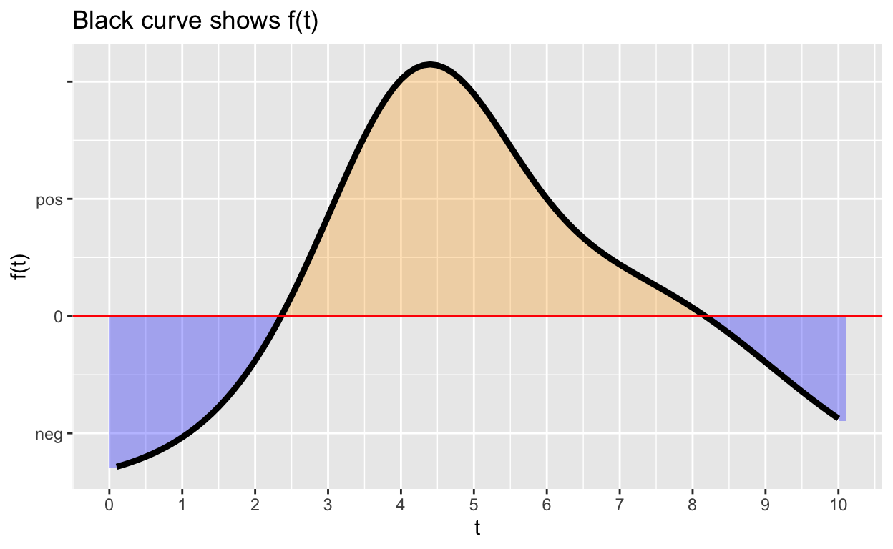
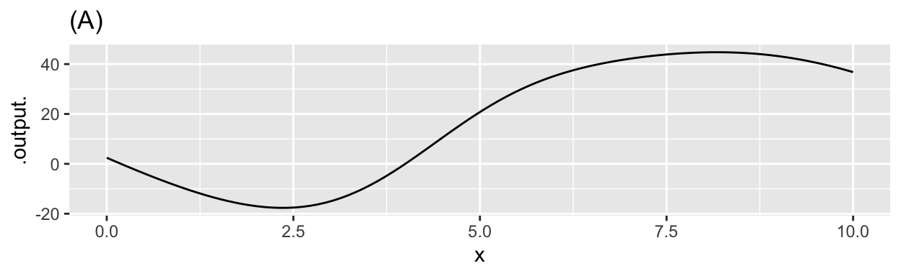
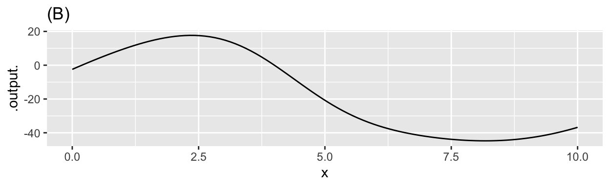
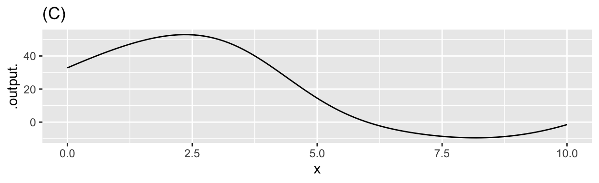
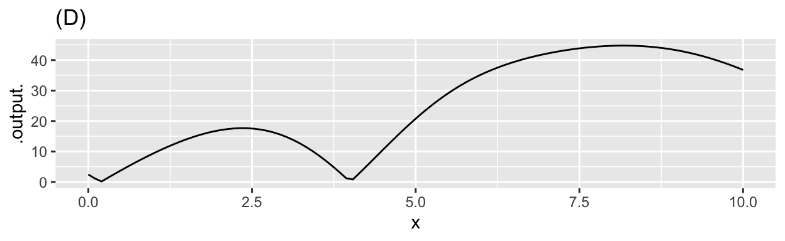

The following exercises are based on properties of definite integrals that were discussed in class and can be found on page 621 of the MMAC textbook.
Here are some definite integrals for which, without stating anything more about the function, we give you the numerical result.
| \(\int_{2}^{7} f(x) \,dx = -8\) | \(\int_{-6}^{-2} g(x) \,dx = 3\) |
| \(\int_{2}^{12} f(x) \,dx = -14\) | \(\int_{0}^{2} g(x) \,dx = 1\) |
| \(\int_{2}^{7} h(x) \,dx = 5\) | \(\int_{0}^{2} h(x) \,dx = 6\) |
Use the above information to answer the multiple-choice questions below.
The top graph shows a function \(f(t)\).
The bottom graph shows an anti-derivative \[F(t) \equiv \int f(t) dt\]
You can make measurements by click/dragging the mouse on the bottom graph.
Sometimes it’s easier to think through matters when they are presented in a concrete, everyday context. Imagine that you managing a small-town water tank. Water flows in from the supply system and flows out to consumer demand. At any instant of time, there’s a net amount flowing to the tank, which could be measured in cubic-meters-per-second. (If the amount is negative, consumers are momentarily consuming more than is being newly supplied.)
The amount of water in the tank, measured in cubic meters, also fluctuates over time. We’re going to call the water in the tank your “stock” of water. As a water manager, you want to make sure that your stock never goes to zero. (Otherwise, the town’s citizens will be without water!)
In terms of functions, the “flow” is \(f(t)\). The definite integral of the flow \[\int_a^b f(t) dt\] gives you some information about the stock: how much the amount of stock has changed from time \(a\) to time \(b\). This is not, however, exactly the same as the stock. Presumably, there was already some water in the tank at time \(a\), so the stock at time \(b\) will be that amount plus the amount of the definite integral of \(f(t)\).
Consider this function, \(f(t)\):

Assume that the “area” of each small box on the graph is the product of 1 Watt \(\times\) 1 second.
\[\mbox{Let}\ \ A = \int_1^3 f(x) dx\ \ \ \mbox{and}\ \ \ B = \int_2^4 f(x) dx\]
\[\mbox{Let}\ \ A = \int_3^1 f(t) dt\ \ \ \mbox{and}\ \ \ B = \int_4^2 f(t) dt\]
Consider the function \[g(x) \equiv \int_4^x f(t) dt\] for the next three questions
\[\mbox{Let}\ \ h(x) \equiv \int_0^x f(t) dt\]
\(\partial_x h(x)\) is a function. When we write \(\partial_x h(3)\) we mean to evaluate that function for an input value of \(x=3\).
\[\mbox{Let}\ \ y(x) \equiv \int_4^x f(t) dt\]
Here are four different graphs.

Work out this anti-derivative on paper.
Once you have your result, translate it into a correct R function.
F <- makeFun( ~ x)library(magrittr)
gradethis::grade_result(
fail_if( ~ !is.function(.result), message = "Your result should be in the form of a function."),
fail_if( ~ !all(correct_arguments %in% names(formals(.result))),
message = "You don't seem to have the right argument name."),
pass_if( ~ all(.result(1:10) ==
answer_fun(1:10))),
fail_if( ~ TRUE, message="Correct arguments, but not the right function.")
) Now that you have the correct answer, use Latex to typeset the formula in the function here. Some Latex tips: \pi will produce \(\pi\).
REMEMBER: Press the REFRESH button before copying the hash code and submitting it at the USAFA Math 142Z site
Location: CalcZ/_DailyDigitals/DailyDocuments/inst/DD-142Z-04/142Z-DD-04.Rmd